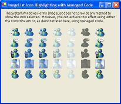
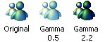
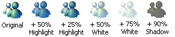

IconHighlight (84K)
IconHighlight (84K)
 6 Sep 2003
6 Sep 2003
First Posted

Highlighting and Shadowing Image List Images
Demonstrates how to produce XP Explorer-style icon highlighting effects using managed and unmanaged code.
For some reason, the System.Windows.Forms.ImageList does not provide a Draw method that allows an image to be drawn highlighted or selected, even though this is part of the basic functionality of the underlying ComCtl32 ImageList. This article provides a method of drawing selected and lightened images using Managed Code and also describes how to do it using unmanaged methods.
Highlighting Icons with Managed Code
There are two techniques you can use from Managed Code to create highlighting type effects:
- Gamma Correction.
- Alpha Blending.
I'll cover these in turn.
Gamma Correction
Gamma correction was developed to make it easier to adjust colours displayed on Cathode Ray Tube (CRT) displays. CRT displays produce a light intensity (luminance) proportional to the input voltage raised to a power. Since no two CRTs are exactly alike in their luminance characteristic, a way of adjusting the input image so the displayed colours match a reference is needed. This is done by adjusting the colours to be displayed by a power which is termed gamma.
Since gamma lightens or darkens the colours in an image it can be used for image processing effects as well as the normal colour profile adjustment. Gamma is normally restricted to the range 1/5 to 5, where a value less than 1 lightens the image, a value of 1 leaves the image unaffected and an value greater than 1 darkens the image:
Effects of modifying gamma.
Gamma correction in the .NET framework is provided by using the ImageAttributes class from the System.Drawing.Imaging namespace. Here's an example of how to use it to draw an image in VB.NET:
' Set up the gamma:
Dim imageAttr As System.Drawing.Imaging.ImageAttributes = _
New System.Drawing.Imaging.ImageAttributes()
imageAttr.SetGamma(0.5)
' Draw the image with the gamma applied:
Dim img As Image = iconImageList.Images(iconIndex)
graphics.DrawImage( _
img, _
destRect, _
1, 1, iconImageList.ImageSize.Width, iconImageList.ImageSize.Height, _
GraphicsUnit.Pixel, imageAttr)
' Done.
imageAttr.Dispose()
Alpha Blending
As the .NET Framework drawing code is based on GDI+, all drawing can take advantage of alpha blending. Unfortunately, there are two problems with this in terms of highlighting an icon:
- Icons and alpha
Icons often aren't represented the way you would like them to be to take best advantage of transparency. You might hope that the transparent area of an icon would be represented as an area where the alpha channel was set to 0 (fully transparent). However, this generally isn't the case and instead the draw routines for icons hack the transparent area by using boolean operations and the mask image of the icon. Personally I think it would make a lot of sense if future versions of the NET Framework dropped the idea of an icon completely and instead converted native Win32 icons into an alpha-bitmap. - Compositing limitations.
To highlight an icon with a colour, what you want to be able to do is to draw a translucent colour over the top of the icon but not where the icon is transparent. This is the Porter-Duff dst_atop compositing operation, which isn't directly supported by the .NET Framework which currently only supports src and src_over in the CompositingMode enumeration.
Despite these limitations, it's possible to hack things to highlight just the coloured area of an icon. The technique works as follows:
- Create an offscreen work bitmap to create the colourised image.
- Draw the icon over a background colour that's unlikely to occur in any of your icons.
- Paint over the entire offscreen bitmap with the translucent colour to highlight the icon with.
- Draw the offscreen image onto the target using the colour remap table feature of the ImageAttributes class.
Here's the VB.NET code which achieves this:
' Create an offscreen bitmap for working on. This is one bigger than
' the icon so we know for sure that the top row of pixels will be
' transparent
Dim bm As Bitmap = New Bitmap( _
iconImageList.ImageSize.Width, iconImageList.ImageSize.Height + 1 _
)
Dim gfx As Graphics = graphics.FromImage(bm)
' Set the background colour to a colour that "won't" appear in the icon:
Dim br As Brush = New SolidBrush(Color.FromArgb(254, 253, 254))
gfx.FillRectangle(br, 0, 0, bm.Width, bm.Height)
br.Dispose()
' Draw the icon starting at the second row in the bitmap:
iconImageList.Draw(gfx, 0, 1, iconIndex)
' Overdraw with the highlight colour:
br = New SolidBrush(Color.FromArgb(highlightAmount, highlightColor))
gfx.FillRectangle(br, 0, 0, bm.Width, bm.Height)
br.Dispose()
gfx.Dispose()
' Now set up a colour mapping from the colour of the pixel
' at 0,0 to transparent:
Dim imageAttr As System.Drawing.Imaging.ImageAttributes = _
New System.Drawing.Imaging.ImageAttributes()
Dim map(0) As System.Drawing.Imaging.ColorMap
map(0) = New System.Drawing.Imaging.ColorMap()
map(0).OldColor = bm.GetPixel(0, 0)
map(0).NewColor = Color.FromArgb(0, 0, 0, 0)
imageAttr.SetRemapTable(map)
If (gamma <> 1.0) Then
imageAttr.SetGamma(1.0)
End If
' Draw the image with the colour mapping, so that only the
' portion of the image with the new colour over the top
' gets mapped:
graphics.DrawImage(bm, destRect, 1, 1, _
iconImageList.ImageSize.Width, iconImageList.ImageSize.Height, _
GraphicsUnit.Pixel, imageAttr)
' Done.
imageAttr.Dispose()
bm.Dispose()
Examples of the result of applying this effect are shown below:
Various alpha-colourised examples.
You can combine the results of applying these effects in various ways, for example, a shadowed icon effect can easily be created by drawing a version of the icon which has been strongly alpha-colourised with the shadow colour underneath an icon.
Highlighting ImageList Icons with Unmanaged Code
The ComCtl32.DLL ImageList API provides ImageList_Draw, ImageList_DrawEx and ImageList_DrawIndirect methods, all of which can be used to highlight an icon.
If you link to v6.0 of ComCtl32.DLL using a Manifest on a Windows XP machine, highlighting is achieved using alpha blending. Earlier versions achieve the highlighting by using a dithered brush to draw over the icon.
This code demonstrates how to use the -Ex variety of the drawing routine to draw highlighted and cut icons:
Private Declare Function ImageList_DrawEx Lib "comctl32" ( _ ByVal hIml As IntPtr, _ ByVal i As Integer, _ ByVal hdcDst As IntPtr, _ ByVal x As Integer, _ ByVal y As Integer, _ ByVal dx As Integer, _ ByVal dy As Integer, _ ByVal rgbBk As Integer, _ ByVal rgbFg As Integer, _ ByVal fStyle As Integer) As Integer Private Const ILD_NORMAL As Integer = 0 Private Const ILD_TRANSPARENT As Integer = 1 Private Const ILD_BLEND25 As Integer = 2 Private Const ILD_SELECTED As Integer = 4 Private Const ILD_MASK As Integer = &H10 Private Const ILD_IMAGE As Integer = &H20
Here's how you would use this to draw highlighted and cut icons:
Dim hDC As IntPtr = gfx.GetHdc()
Dim hIml As IntPtr = ilsIcons.Handle
Dim rgbFg As Integer
' Highlighted:
rgbFg = Color.FromKnownColor(KnownColor.Highlight)
ImageList_DrawEx _
hIml, iconIndex, hdc, x, y, 0, 0, _
-1, rgbFg, _
ILD_TRANSPARENT or ILD_SELECTED
' Cut
rgbFg = Color.White
ImageList_DrawEx _
hIml, iconIndex, hdc, x, y, 0, 0, _
-1, rgbFg, _
ILD_TRANSPARENT or ILD_SELECTED
gfx.ReleaseHdc(hDC);
Conclusion
This article has demonstrated how to work around the lack of icon highlighting in the .NET Framework API using either managed or unmanaged techniques.